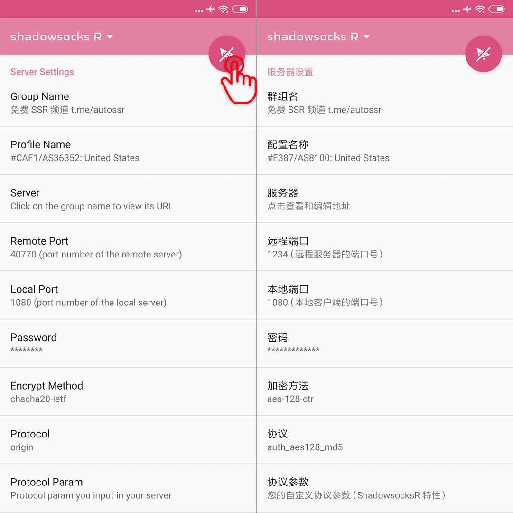
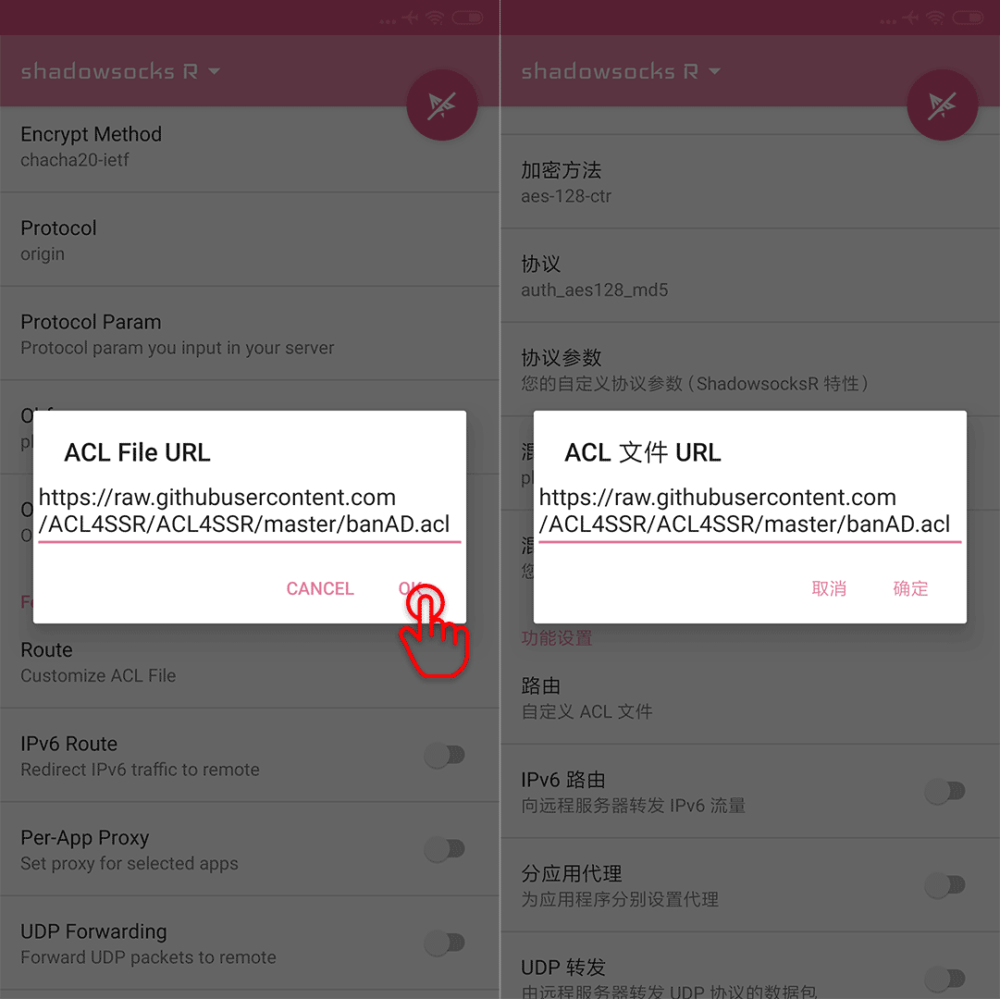

怎么在Android上使用AutoSSR¶
Subscribe AutoSSR: 免费 ShadowsocksR in SSRR on Android.
Download and install¶
You can touch this link for Download shadowsocksr-android-3.5.3.apk
{kind=link}
Launch it:

Add AutoSSR Subscribe¶
Go to the profiles:
{kind=link}
Add SSR Subscription:
{kind=link}
Fill the blank, with one of the links of AutoSSR: 免费 ShadowsocksR, the stable and online is recommended, we choose the stable one here:
// copy this
https://git.io/autossr_stable
then press OK:
{kind=link}
Save and update:
{kind=link}
Choose one:
{kind=link}
Connect:
{kind=link}
It is connected now.
If you want to check it:

Here is the result.
{kind=link}
Enjoy!!
How to choose and use rules¶
A suitable rule configuration can help you optimize routing paths, increase speed and save traffic. If you want this feature, there is a wonderful repository lhie1/Rules. Great thanks to lhie1.
To enable the rules, follow the steps below:
Swipe up to Feature Settings - Route:

Choose Customize ACL File:
{kind=link}
For SSRR, the ACL File
https://raw.githubusercontent.com/ACL4SSR/ACL4SSR/master/banAD.acl
is recommended, it is provided in Android SSR ACL in lhie1/Rules.
Paste the URL and press OK:
{kind=link}

Well done.
Keep it connected¶
Keep it connected, and you are free to visit everywhere.